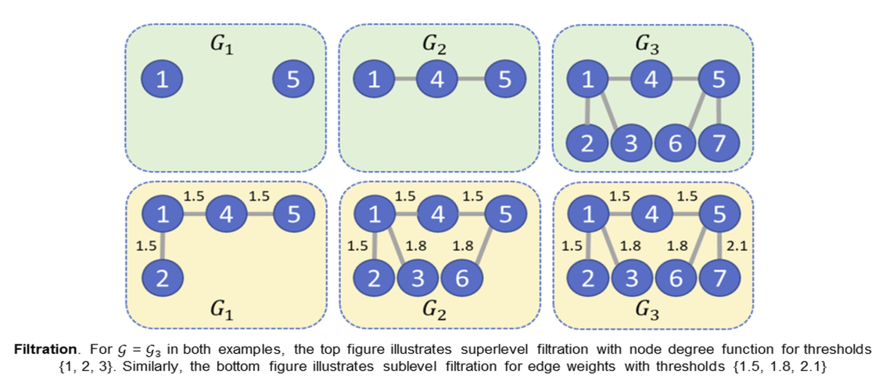

Graph embeddings play a critical role in graph representation learning, allowing machine learning models to explore and interpret graph-structured data. However, existing methods often rely on opaque, high-dimensional embeddings, limiting interpretability and practical visualization.
In this work, we introduce Topological Evolution Rate (TopER), a novel, low-dimensional embedding approach grounded in topological data analysis. TopER simplifies a key topological approach, Persistent Homology, by calculating the evolution rate of graph substructures, resulting in intuitive and interpretable visualizations of graph data. This approach not only enhances the exploration of graph datasets but also delivers competitive performance in graph clustering and classification tasks. Our TopER-based models achieve or surpass state-of-the-art results across molecular, biological, and social network datasets in tasks such as classification, clustering, and visualization.
A graph \( G = (V, E) \) consists of nodes \( V \) and edges \( E \).
A filtration is a nested sequence of subgraphs:
\( G_1 \subseteq G_2 \subseteq \cdots \subseteq G_n = G \)
Filtrations are constructed using:
A sublevel filtration adds nodes or edges of increasing function value:
where \( \mathcal{T} = \{\epsilon_1, \ldots\} \).
TopER is a topology-inspired method for understanding graph evolution via filtration.
Motivations:
Given a graph G = (V, E), we first construct a nested sequence of subgraphs: G₁ ⊆ G₂ ⊆ ... ⊆ Gₙ = G using a chosen filtration function, such as degree, closeness, or an edge-based function. For each filtration graph Gᵢ, we record:
This yields two monotone sequences x = {x₁, x₂, ..., xₙ} and y = {y₁, y₂, ..., yₙ}, which describe how the graph grows across filtration thresholds t = {t₁, t₂, ...}.
In traditional PH, the next step would compute topological features for each Gᵢ and vectorize persistence. TopER instead examines how nodes and edges accumulate relative to nodes across the filtration.
We fit a line to the filtration pairs {(xᵢ, yᵢ)} ∈ ℝ² using simple linear regression:
L(x) = a + b·x
The regression minimizes the squared error:
E = Σᵢ (L(xᵢ) - yᵢ)²
resulting in coefficients (a, b) that summarize the graph’s structural evolution.
We applied degree, closeness, degree centrality, and popularity as node filtration functions and Forman- and Ollivier-Ricci functions as edge filtration functions. We also used atomic weight as a node function for BZR, COX2, and MUTAG, and node attributes for PROTEINS.
To increase the performance, we remove correlated functions by using the t-test to assess statistical significance and the Lasso for model regularization, with the cross-validation parameter cv=10. Functions are kept in the model if the p-values from the t-test are less than 0.05 and the related Lasso coefficients are non-zero.
Repository: https://github.com/AstritTola/TopER
For questions or collaborations, contact:
Astrit Tola – astrittola@gmail.com
NeurIPS 2025 📄 Download Full Paper (PDF)